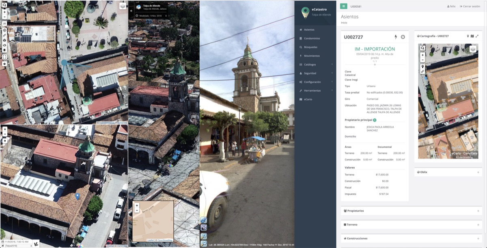
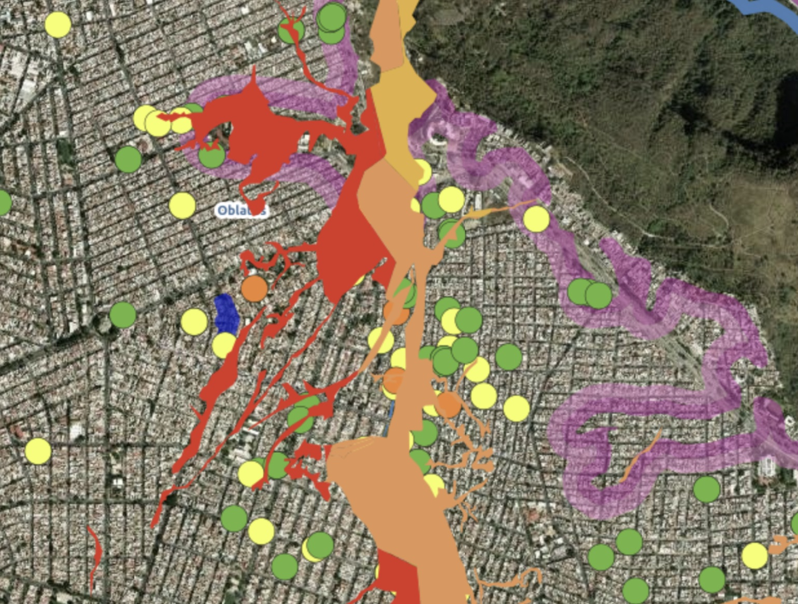
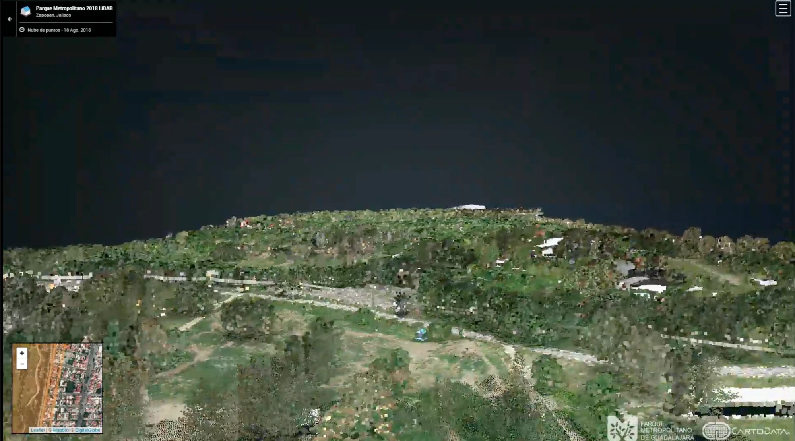
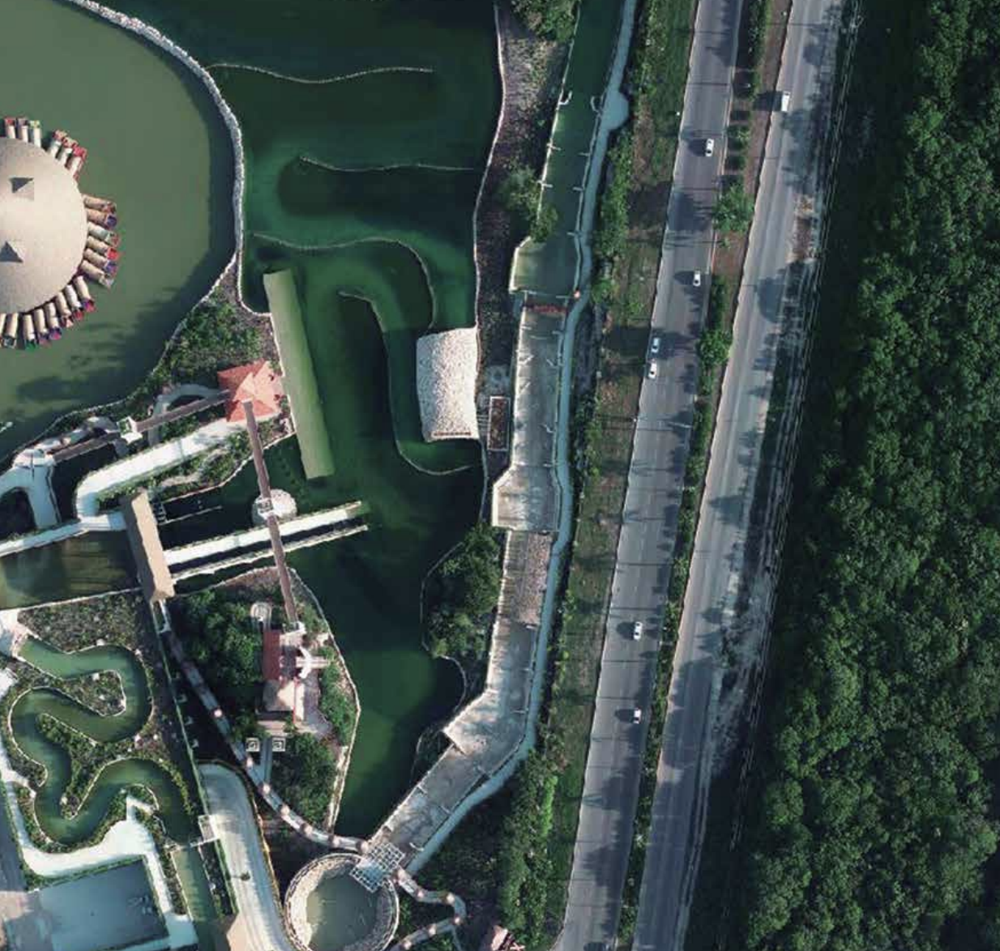
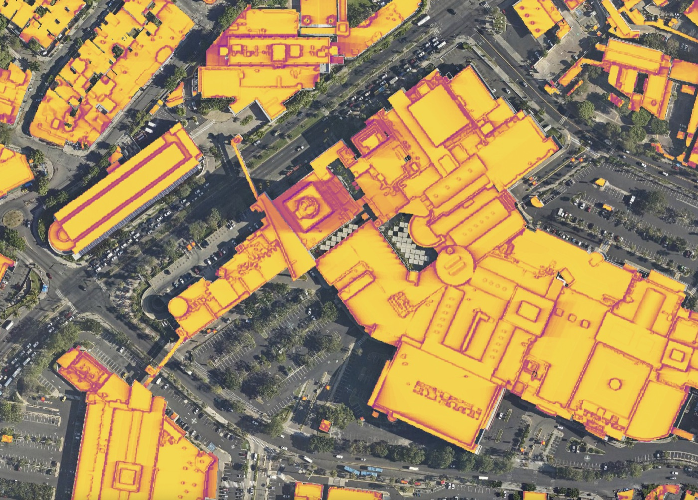
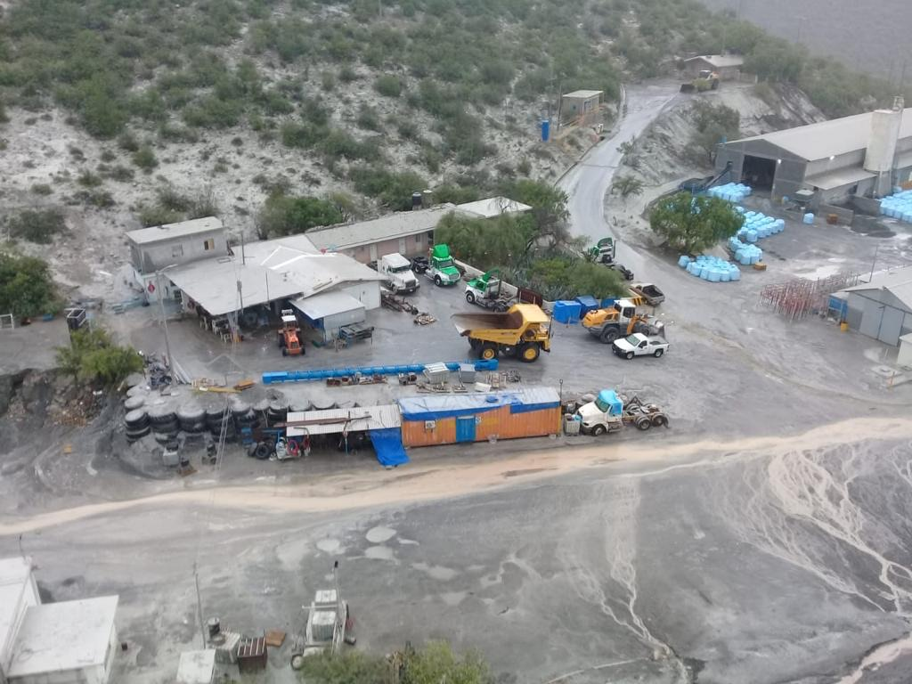
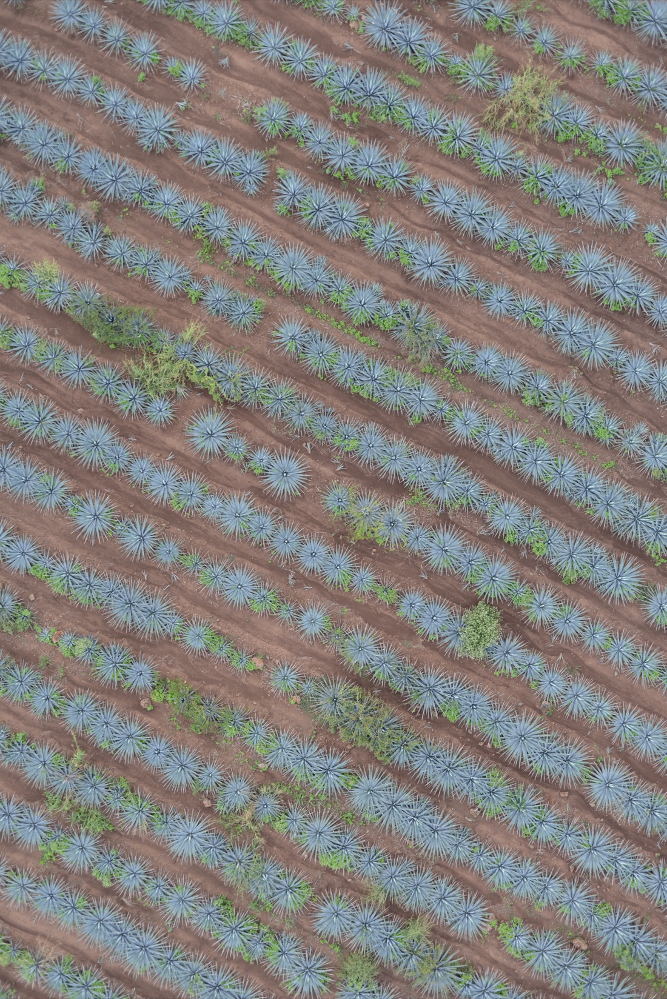
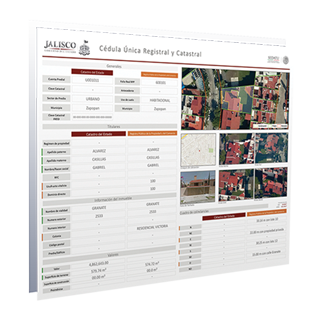

Áreas de servicio
Todo lo que hacemos con tus datos geoespaciales
Desde el diagnóstico inicial hasta la entrega de análisis especializados, nuestros procesos integran tecnología de vanguardia, décadas de experiencia y metodologías probadas.
Análisis
Planos Cartográficos

Generación de planos cartográficos de alta precisión para planificación urbana, catastro y gestión territorial.
Análisis · Catastro
Análisis Catastral

Herramientas y metodologías para modernizar el catastro municipal y maximizar la recaudación predial.
Análisis · Riesgos
Atlas de Riesgos

Elaboración de Atlas de Riesgos para identificar, cartografiar y gestionar amenazas naturales en el territorio.
Análisis · Planeación
Planeación Urbana

Elaboración de planes parciales y estudios de planeación territorial para el desarrollo ordenado de la ciudad.
Análisis · Arbolado
Arbolado y Áreas Verdes

Planeación de áreas verdes y programas de reforestación urbana basados en datos geoespaciales precisos.
Análisis · Ambientales
Impacto Ambiental

Estudios de impacto ambiental con soporte geoespacial para proyectos de infraestructura, minería y desarrollo urbano.
Análisis · Geomarketing
Geomarketing

Estudio de mercado y vocaciones territoriales para identificar la localización óptima para el desarrollo de negocios e inversión.
Análisis · Minería
Minería

Inventario de pozos, cálculo de volúmenes de extracción y elaboración de Manifestaciones de Impacto Ambiental para el sector minero.
Análisis · Agrotech
Agrotech

Análisis de índices de vegetación (NDVI) y optimización del uso de fertilizantes para una agricultura de precisión.
Análisis · Diagnóstico
Diagnóstico Geoespacial

Evaluación del índice de madurez geoespacial de tu organización para identificar brechas y oportunidades de mejora.